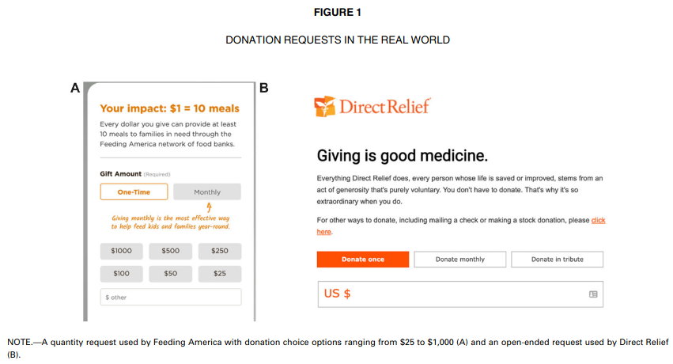
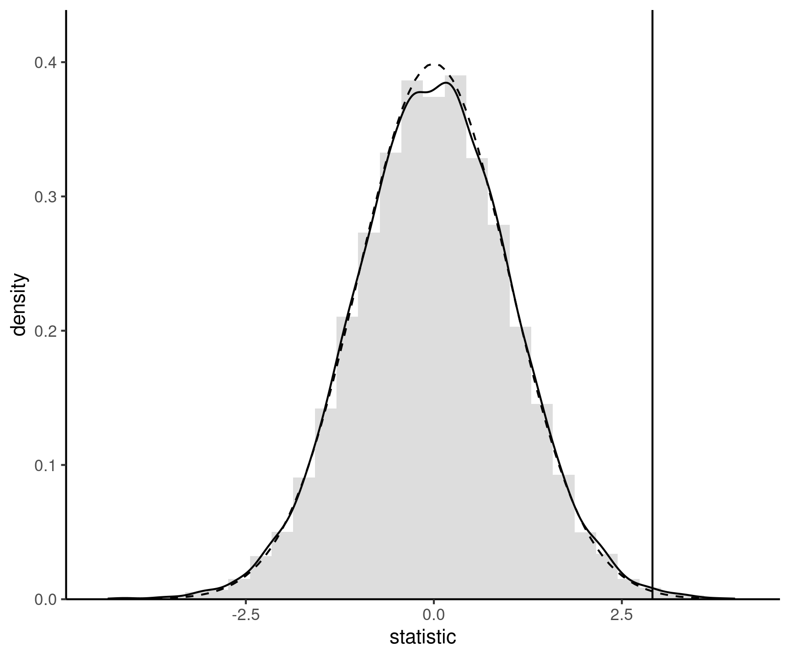
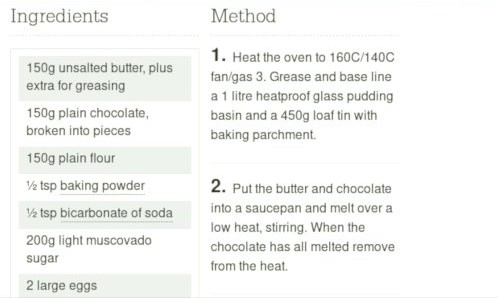

The population distribution (describing possible outcomes and their frequencies) encodes everything we could be interested in.
Sampling variability
Histograms for 10 random samples of size 20 from a discrete uniform distribution.
Decision making under uncertainty
Statistics is concerned with decision making under uncertainty.
Data collection is costly.
we only have limited information about the population.
focus on moments (mean \(\mu\), standard deviation \(\sigma\), etc.)
Samples are typically too small to reliably estimate the whole distribution.
we rely instead on a statistical model to gain insights about the data.
Why use models?
A famous quote attributed to George Box claims that
All models are wrong, but some are useful.
Peter McCullagh and John Nelder wrote in the preamble of their book (emphasis mine)
Modelling in science remains, partly at least, an art. Some principles do exist, however, to guide the modeller. The first is that all models are wrong; some, though, are better than others and we can search for the better ones. At the same time we must recognize that eternal truth is not within our grasp.
More insights on modelling
This quote by David R. Cox adds to the point:
…it does not seem helpful just to say that all models are wrong. The very word model implies simplification and idealization. The idea that complex physical, biological or sociological systems can be exactly described by a few formulae is patently absurd. The construction of idealized representations that capture important stable aspects of such systems is, however, a vital part of general scientific analysis and statistical models, especially substantive ones, do not seem essentially different from other kinds of model.
What is in a model?
A stochastic model typically combines
a distribution for the data
a formula linking the parameters or the mean of a response variable \(Y\) conditional on explanatory variables \(\mathbf{X}\)
Models are “golem” for obtaining answers to our questions.
How to model
Determine a research question and collect some data/harvest data.
Conduct an exploratory data analysis.
what are the salient features of the data?
Build a preliminary model.
Check the goodness-of-fit or adjustment.
Rinse and repeat if necessary.
How do we determine the model?
We need to know
how were the data collected
what is the sampling mechanism?
are variables observed or experimentally manipulated?
what is the nature of the response?
count data, proportions, etc.
Nature of data
Are data from a random sample of the population or not?
if so, can generalize conclusions.
Is there a “treatment” randomly allocated?
if so, data are experimental (as opposed to observational).
Observational vs experimental
Without further adjustment, we cannot draw causal statements from observational data.
A within-subject experiment was conducted in a driving simulator where 31 participants received and answered text messages under four conditions: they received notifications (1) on a mobile phone, (2) on a smartwatch, and (3) on a speaker, and then responded orally to these messages. They also (4) received messages in a “texting” condition where they had to reply through text to the notifications.
3. Perceived environmental friendliness of packages
Eight studies (N = 4103) document the perceived environmental friendliness (PEF) bias whereby consumers judge plastic packaging with additional paper to be more environmentally friendly than identical plastic packaging without the paper.
Model: linear regression/ANOVA with custom contrasts. Dataset SKD23_S2A, package hecedsm
4. A/B tests and news headlines
Upworthy.com, a US media publisher, revolutionized headlines online advertisement by running systematic A/B tests to compare the different wording of headlines, placement of text and image to figure out what catches attention the most.
The Upworthy Research Archive (Matias et al. 2021) contains results for 22743 experiments, with a click through rate of 1.58% on average and a standard deviation of 1.23%.
Model: Poisson regression with offset. Data upworthy_sesame, package hecbayes.
In a laboratory study and a field experiment across five countries (in Europe, the Middle East and South Asia), we show that videoconferencing inhibits the production of creative ideas […]
we demonstrate that videoconferencing hampers idea generation because it focuses communicators on a screen, which prompts a narrower cognitive focus. Our results suggest that virtual interaction comes with a cognitive cost for creative idea generation.
Model: Linear regression with compound symmetry covariance/MANOVA. Dataset BL22_E, package hecedsm
Model: Binomial regression, dataset BL22_L from package hecedsm.
Across seven studies, we provide evidence that quantity requests, wherein people consider multiple choice options of how much to donate (e.g., $5, $10, or $15), increase contributions compared to open-ended requests.
Our findings offer new conceptual insights into how quantity requests increase contributions as well as practical implications for charitable organizations to optimize contributions by leveraging the use of quantity requests.

Model: Tobit type II regression and Poisson regression (independence test), data MV23_S1 from package hecedsm.
Customers must often decide on the quantity to purchase in addition to whether to purchase. The current research introduces and compares the quantity-sequential selling format, in which shoppers resolve the purchase and quantity decisions separately, with the quantity-integrated selling format, where shoppers simultaneously consider whether and how many to buy. Although retailers often use the sequential format, we demonstrate that the integrated format can increase purchase rates.
A field experiment conducted with a large technology firm found that quantity integration yielded considerably higher sales, amounting to an increase of more than $1 million in annual revenue.
Model: logistic regression, dataset DA23_E1.
8. Price of oil in the Gaspe Peninsula
Mayors requested an inquiry by the Régie de l’énergie, a regulating agency in charge of energy prices. The report found that prices were indeed more expensive, but pointed out that there were more retailers per capita, and lower volume so their margins were higher.
Model: Linear regression with autoregressive errors, pairwise comparisons. Dataset renergy, package hecstatmod.
Hypothesis testing
Sampling variability
We cannot compare summaries without accounting for their uncertainty inherent to our estimation which is due to random sample.
Figure 1: Five samples of size \(n=10\) drawn from a common population with mean \(\mu\) (horizontal line). The colored segments show the sample means of each sample.
The signal and the noise
The stronger the signal-to-noise ratio, the larger our ability to detect differences when they truly exist.
Accumulation of information
As we gather more observations (sample size increases), we can better discriminate between scenarios.
Histograms of data from uniform (top) and non-uniform (bottom) distributions with increasing sample sizes.
Recipe for hypothesis test
An hypothesis test is a binary decision rule (reject/fail to reject)
Below are the different steps to undertake:
Define the variables of interest.
Formulate the alternative and the null hypotheses, \(\mathscr{H}_a\) and \(\mathscr{H}_0\).
Choose the test statistic and compute the latter on the sample.
Compare the numerical value with the null distribution.
Obtain the p-value or a confidence interval.
Conclude in the setting of the problem.
Running example: texting while walking
Tech3Lab, HEC Montreal’s User Experience (UX) lab, studied the impact of texting on distraction.
Study details
35 participants took part in the study.
Each person had to walk on a treadmill in front of a screen where obstacles were projected.
In one of the sessions, the subjects walked while talking on a cell phone, whereas in another session, they walked while texting.
The order of these sessions was determined at random.
Different obstacles were randomly projected during the session.
We are only interested in one kind of scenario: a cyclist riding towards the participant.
Distraction type (cellphone call or texting): nominal variable
Response variable: time (in seconds) that it takes for a person to notice the obstacle when walking while texting or talking on a cell phone (measured through an encephalogram)
1. Define the variables of interest
Let \(\mu_{\texttt{c}}\) be the average reaction time (in seconds) during a call (c)
and let \(\mu_{\texttt{t}}\) be the average reaction time (in seconds) while texting (t)
2. Formulate the null and alternative hypothesis
Hypothesis of interest (alternative): does texting increases distraction?
Express the hypothesis in terms of the difference of means \[\begin{align*}
\mathscr{H}_a: \mu_{\texttt{t}} - \mu_{\texttt{c}}>0.
\end{align*}\]
We only ever assess the null hypothesis at a single value.
How to assess evidence?
A statistic is a function of the data that returns a numerical summary.
There are general principles for constructing statistics: for example, Wald statistics are of the form \[\begin{align*}
W = \frac{\text{estimated qty} - \text{postulated qty}}{\text{std. error (estimated qty)}} = \frac{T - T_0}{\mathsf{se}(T)}
\end{align*}\]
Statistic are typically unitless quantities.
This standardization is useful for benchmarking purposes.
The standard error measures the uncertainty of the statistic.
3.Choose the test statistic
We compare the difference of the mean reaction time.
one-sample t-test for \(\texttt{t}-\texttt{c}\) (paired t-test) \[\begin{align*}
T_D=\frac{\overline{D}-\mu_0}{\mathsf{se}(\overline{D})}
\end{align*}\]
\(\overline{D}\) is the mean difference in the sample.
Under \(\mathscr{H}_0: \mu_0=\mu_{\texttt{t}}-\mu_{\texttt{c}}=0\).
The standard error of \(\overline{D}\) is \(\mathsf{se}(\overline{D})=S_D/\sqrt{n}\), where \(S_D\) is the standard deviation of the variables \(D_i\) and \(n\) the sample size.
##
## Paired t-test
##
## data: t and c
## t = 3, df = 34, p-value = 0.003
## alternative hypothesis: true mean difference is greater than 0
## 95 percent confidence interval:
## 0.131 Inf
## sample estimates:
## mean difference
## 0.313
Null distribution
The null distribution tells us what values we would obtain under a null, and their relative frequency.
We typically rely on large sample approximations, that are justified by the central limit theorem.
Alternative, use simulation-based inference (check permutation tests).
The null distribution is a benchmark to establish whether our outcome is extreme.
Null distributions

Figure 2: Permutation-based approximation to the null distribution (full) and standard normal approximation (dashed curve). The value of the test statistic calculated using the original sample is represented by a vertical line.
4. Compare the statistic with the null distribution
The test statistic value is \(t_D = 2.91\).
We are only interested in the probability that \(T > 2.91\) under \(\mathscr{H}_0\) (one-sided test).
Use as null distribution a standard Student-t distribution with 34 degrees of freedom, \(T \sim \mathsf{Student}(34)\).
The \(0.05\) quantile of \(T\) is \(\mathfrak{t}_{0.05} = -1.691\).
\(P\)-values
Apply distribution function of the null distribution to map the test statistic to the \([0,1]\) interval.
The p-value is the probability that the test statistic is equal or more extreme to the estimate computed from the data, assuming \(\mathscr{H}_0\) is true.
P-values do not measure the probability that the studied hypothesis is true.
p-value, or statistical significance, does not measure the size of an effect or the importance of a result.
Hypothesis testing as a trial analogy
Figure 3: Screenshot of the courtoom drama Twelve Angry Men (1957)
Trial analogy
The presumption of innocence applies (look at everything as if the null hypothesis is true)
Evidences are judged under this optic: are they remotely plausible if the person was innocent?
The burden of the proof lies with the prosecution to avoid as much as possible judicial errors.
The null hypothesis \(\mathscr{H}_0\) is not guilty, whereas the alternative \(\mathscr{H}_a\) is guilty.
If there is a reasonable doubt, the verdict of the trial will be not guilty.
What can we expect of \(p\)-values?
If we repeat the experiment with random samples, we expect \(p\)-values to be uniform if \(\mathscr{H}_0\) is true and the null hypothesis benchmark is properly calibrated.
Under the alternative, smaller \(p\)-values occur more often than \(\alpha\).
Figure 4: Density of p-values under the null hypothesis (left) and under an alternative with a signal-to-noise ratio of 0.5 (right).
Level of a test
If the null hypothesis \(\mathscr{H}_0\) is true, the p-value follows a uniform distribution if our benchmark is properly calibrated.
There are always small \(p\)-values, even if they are less likely.
Since we want to rule out against the null hypothesis, we need to pre-determine a level\(\alpha\) to decide when to reject \(\mathscr{H}_0\).
To make a decision, we compare our p-value \(P\) with the level of the test \(\alpha\):
if \(P < \alpha,\) we reject \(\mathscr{H}_0\);
if \(P \geq \alpha,\) we fail to reject \(\mathscr{H}_0.\)
The value of \(\alpha \in (0, 1)\) is the probability of rejecting \(\mathscr{H}_0\) when \(\mathscr{H}_0\) is in fact true.
Statistical errors
Decision \ true model
\(\mathscr{H}_0\)
\(\mathscr{H}_a\)
fail to reject \(\mathscr{H}_0\)
\(\checkmark\)
type II error
reject \(\mathscr{H}_0\)
type I error
\(\checkmark\)
We seek to avoid error of type I: we reject \(\mathscr{H}_0\) when \(\mathscr{H}_0\) is true.
trial analogy: avoid condemning an innocent.
Since we fix the level \(\alpha\), we have no control over the type II error.
Power
We want to be able to detect and reject \(\mathscr{H}_0\) when it is false.
The power of a test is the probability of rejecting \(\mathscr{H}_0\) when it is false, i.e., \[\begin{align*}
\Pr{\!}_a(\text{reject } \mathscr{H}_0),
\end{align*}\] where \(\Pr_a\) is the probability under a given alternative of falling in the rejection region .
Illustration of power
Figure 5: Comparison between null distribution (full curve) and a specific alternative for a t-test (dashed line). The power corresponds to the area under the curve of the density of the alternative distribution which is in the rejection area (in white). The middle panel shows an increase in power due to an increase in the mean difference, whereas the right panel shows the change due to a decrease in variability of increase in the sample size.
Criteria determining power
the effect size: the bigger the difference between the postulated value for \(\theta_0\) under \(\mathscr{H}_0\) and the observed behavior, the easier it is to detect it, as in the middle panel of Figure 5;
variability: the less noisy your data, the easier it is to detect differences between the curves
the sample size: the more observation, the smaller the standard error
the choice of test statistic
Minimally, the power of the test should be \(\alpha\) because we reject the null hypothesis \(\alpha\) fraction of the time even when \(\mathscr{H}_0\) is true.
Confidence interval
A confidence interval is an alternative way to present the conclusions of an hypothesis test performed at significance level \(\alpha\) with the same data units.
Wald-based \((1-\alpha)\) confidence intervals for a scalar parameter \(\theta\) are of the form \[\begin{align*}
[\widehat{\theta} + \mathfrak{q}_{\alpha/2}\mathrm{se}(\widehat{\theta}, \widehat{\theta} +\mathfrak{q}_{1-\alpha/2}\times \mathrm{se}(\widehat{\theta})]
\end{align*}\] corresponding to a point estimate plus or minus the margin of error.
Estimation: a piece of cake
We distinguish between our target (estimand, e.g., population mean), the recipe or formula (estimator) and the output (estimate).
(a) Estimand

(b) Estimator
(c) Estimate
Figure 6: Estimand (left), estimator (middle) and estimate (right) illustrated with cakes and based on an original idea of Simon Grund. Cake photos shared under CC BY-NC 2.0 license.
Interpretation of confidence interval
Since the inputs of the confidence interval (estimator) are random, the output is also random and change from one sample to the next: even if you repeat a recipe, you won’t always get the exact same result.
If we calculate the confidence interval for a sample, the true unknown value of the parameter \(\theta\) is either in the confidence interval or not: there is no notion of probability!
Our confidence is in the procedure we use to calculate confidence intervals and not in the actual values we obtain from a sample.
If we were to repeat the experiment multiple times, and calculate a \(1-\alpha\) confidence interval each time, then roughly \(1-\alpha\) of the calculated confidence intervals would contain the true value of \(\theta\) in repeated samples.
Frequentist properties of confidence intervals
95% confidence intervals for the mean of a standard normal population for 100 random samples. On average, 5% of these intervals fail to include the true mean value of zero (in red).
Equivalence of confidence intervals and \(p\)-values
The \(1-\alpha\) confidence interval gives us all values for which we fail to reject \(\mathscr{H}_0\) at level \(\alpha\)
Binary decision rule with confidence interval: if the postulated value lies inside the interval, we fail to reject the null hypothesis.
The \(p\)-value based on the same procedure would be \(p \ge\alpha\) if you fail to reject (and vice-versa \(p <\alpha\) if the value is outside the interval).
But confidence intervals are in terms of the data units, so easier to interpret.
5. Obtain a p-value or a confidence interval
The p-value is \(p = \Pr_0(T > t_D)\), where \(T \sim \mathsf{Student}(34)\). Using R, we find \(p=0.0032\), which is smaller than \(\alpha=5\%\).
ttest$p.value## [1] 0.249
The lower bound of the confidence interval is \(\overline{D} + \mathsf{se}(\overline{D}) \times \mathfrak{t}_{0.05}\).
The one-sided confidence interval is \([-1.067, \infty]\). The postulated null value, \(0\), is outside the interval.
R — calculations by hand
d <-with(distraction, t - c) # time difference text vs conversationn <-length(d) # sample size(mean_d <-mean(d)) # mean difference## [1] 0.313(se_d <-sd(d)/sqrt(n)) # standard error of sample mean## [1] 0.108(stat <- mean_d/se_d) # t-test statistic## [1] 2.91dof <- n -1L # degrees of freedomcrit <-qt(p =0.05, df = dof) # critical value, "q" for quantile(pval <-pt(q = stat, df = dof, lower.tail =FALSE)) # Pr(T > stat)## [1] 0.00319(conf_low <- mean_d + se_d*crit) # lower bound of Wald confidence interval## [1] 0.131
6. Conclude in the setting of the problem
The estimated mean difference is \(82.146, 82.541\) seconds (std. error of \(0.343\) seconds).
We reject \(\mathscr{H}_0\), meaning that the reaction time is significantly higher (at level \(5\)%) when texting than talking on the cellphone while walking (p-value of \(0.003\)).
Learning objectives
Learning objectives
Understanding the role of uncertainty in decision making.
Understanding the importance of signal-to-noise ratio as a measure of evidence.
Knowing the basic ingredients of hypothesis testing and being capable of correctly formulating and identifying these components in a paper.
Correctly interpreting \(p\)-values and confidence intervals for a parameter.
References
Brodeur, Mathieu, Perrine Ruer, Pierre-Majorique Léger, and Sylvain Sénécal. 2021. “Smartwatches Are More Distracting Than Mobile Phones While Driving: Results from an Experimental Study.”Accident Analysis & Prevention 149: 105846. https://doi.org/10.1016/j.aap.2020.105846.
Brucks, Melanie S., and Jonathan Levav. 2022. “Virtual Communication Curbs Creative Idea Generation.”Nature 605 (7908): 108–12. https://doi.org/10.1038/s41586-022-04643-y.
Duke, Kristen E., and On Amir. 2023. “The Importance of Selling Formats: When Integrating Purchase and Quantity Decisions Increases Sales.”Marketing Science 42 (1): 87–109. https://doi.org/10.1287/mksc.2022.1364.
Matias, J. Nathan, Kevin Munger, Marianne Aubin Le Quere, and Charles Ebersole. 2021. “The Upworthy Research Archive, a Time Series of 32,487 Experiments in U.S. Media.”Scientific Data 8 (195). https://doi.org/10.1038/s41597-021-00934-7.
Moon, Alice, and Eric M VanEpps. 2023. “Giving Suggestions: Using Quantity Requests to Increase Donations.”Journal of Consumer Research 50 (1): 190–210. https://doi.org/10.1093/jcr/ucac047.
Sokolova, Tatiana, Aradhna Krishna, and Tim Döring. 2023. “Paper Meets Plastic: The Perceived Environmental Friendliness of Product Packaging.”Journal of Consumer Research 50 (3): 468–91. https://doi.org/10.1093/jcr/ucad008.